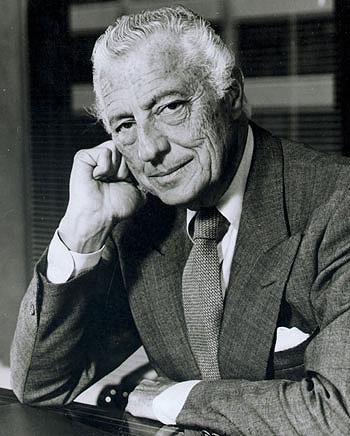
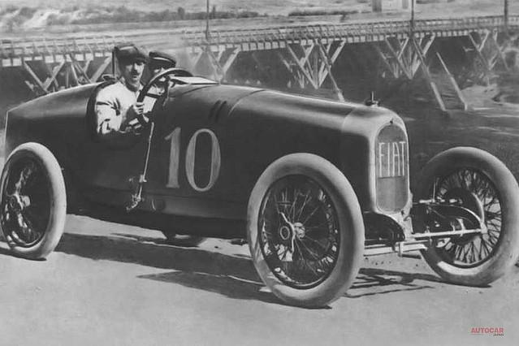
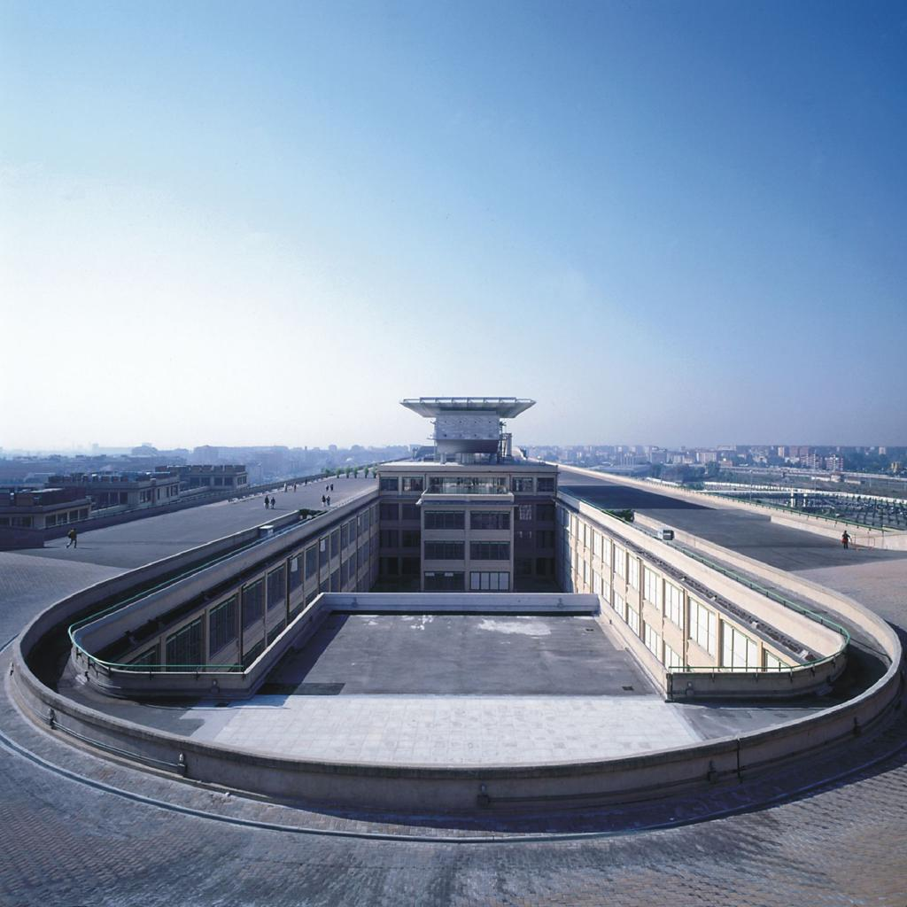
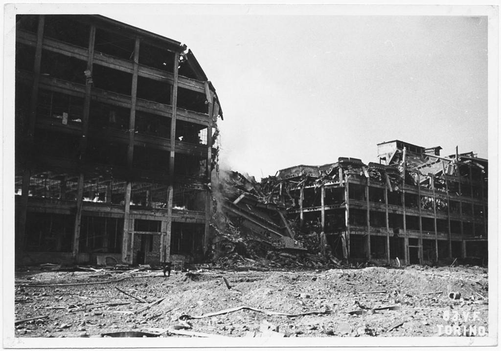
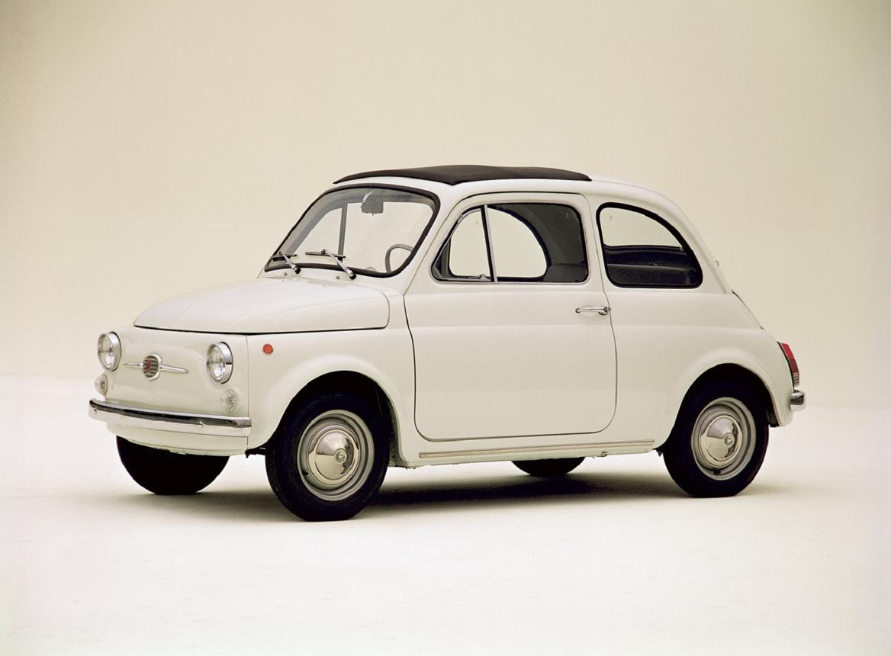
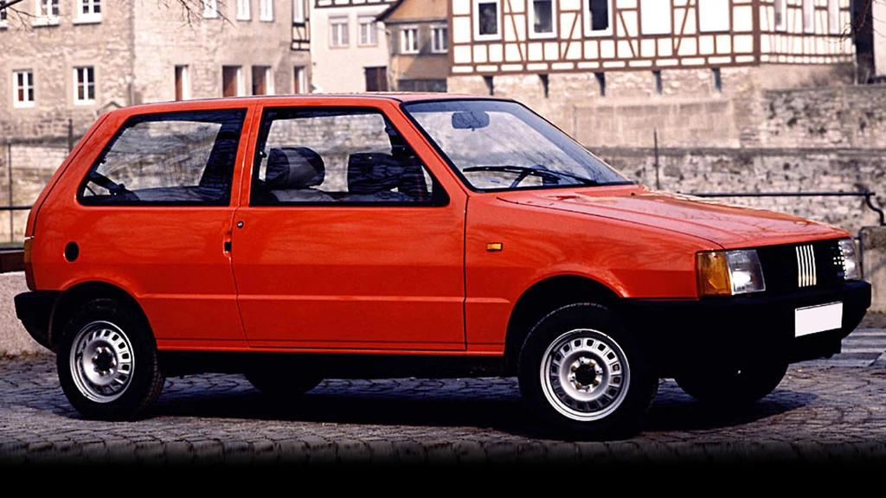
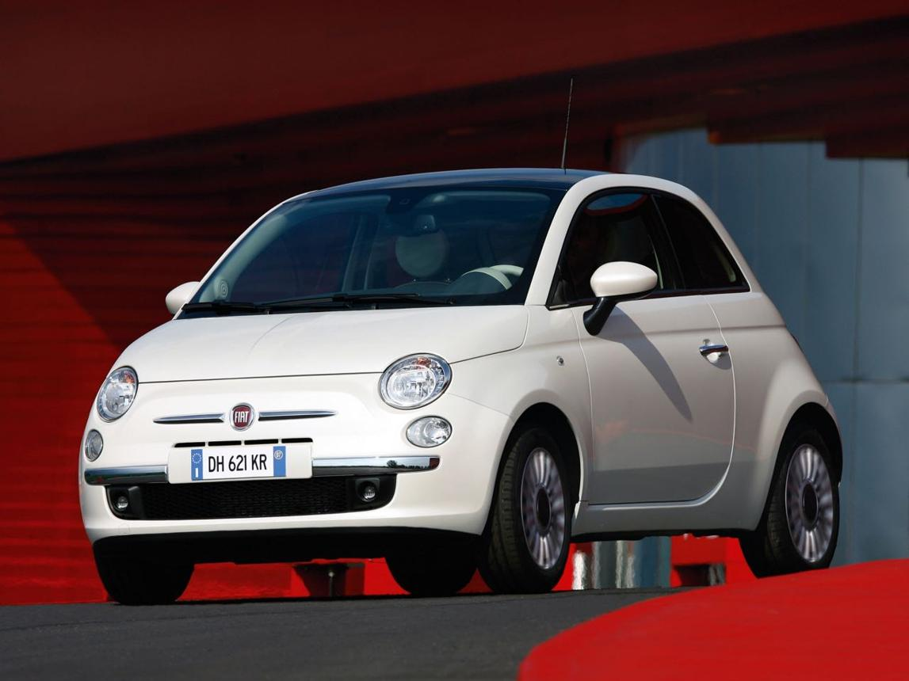
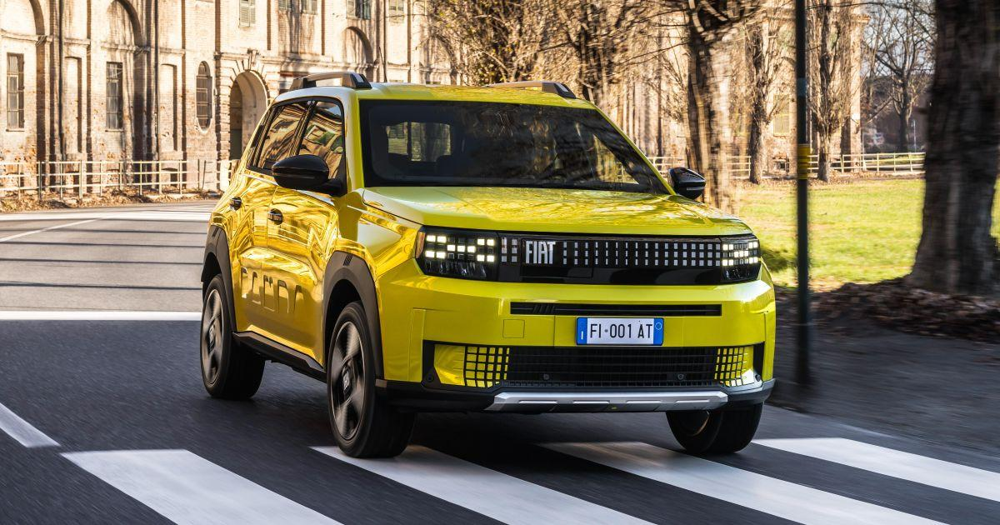
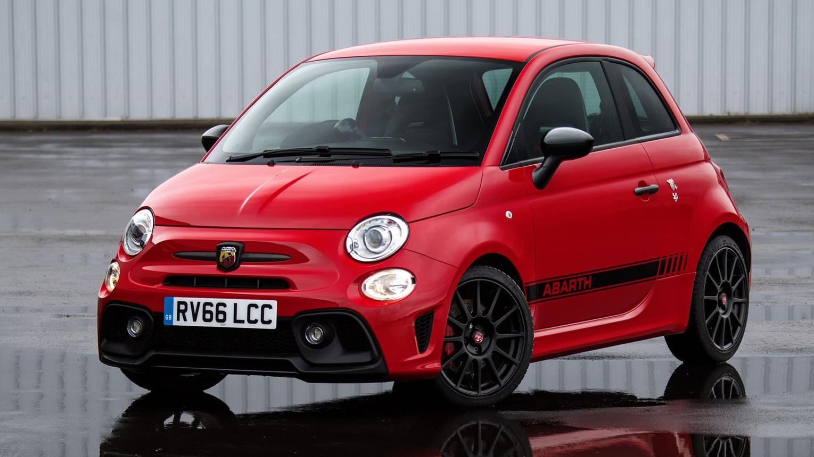
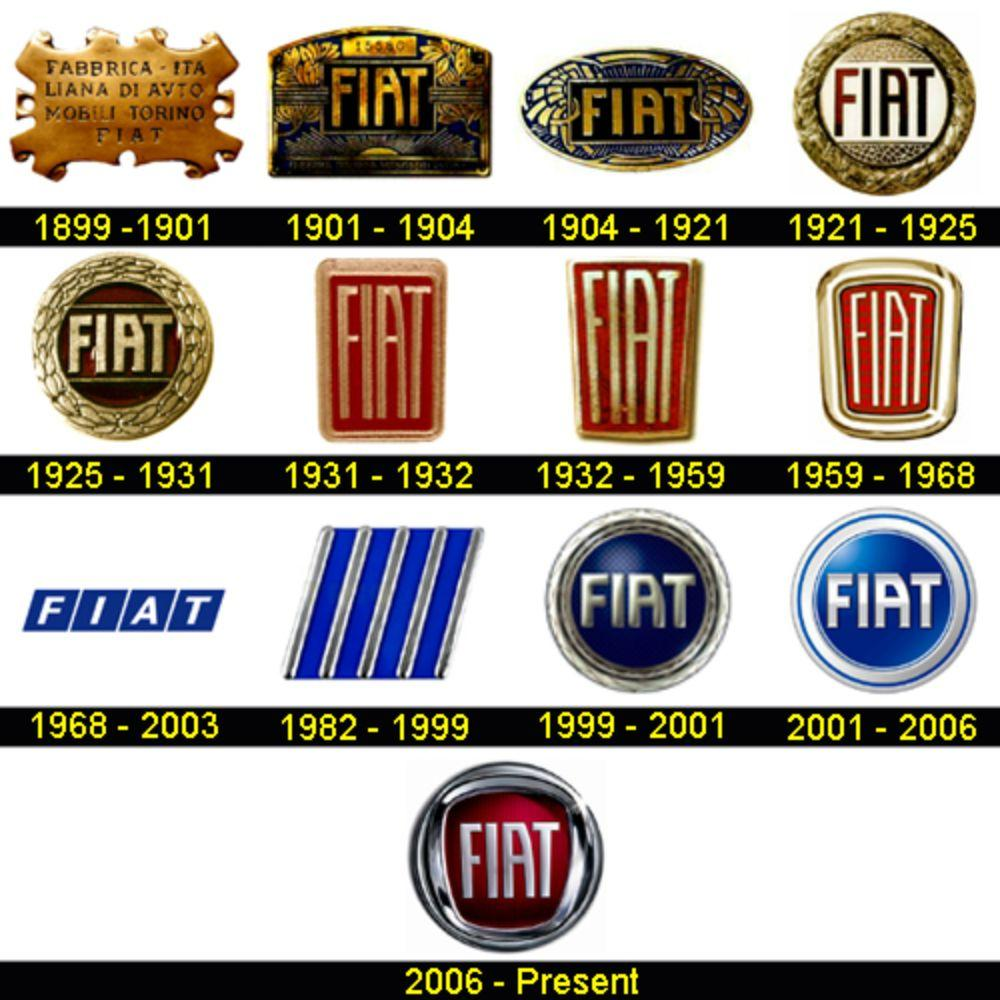

En 1899, Giovanni Agnelli et plusieurs investisseurs fondent FIAT, dont le nom signifie Fabbrica Italiana Automobili Torino (« Fabrique italienne d'automobiles de Turin »). L'entreprise est installée à Turin, qui devient rapidement le centre de l'industrie automobile italienne. La première voiture de la marque est la Fiat 3½ HP, produite en très petite série. Dès ses débuts, Fiat se distingue par la qualité de ses véhicules et son ambition de produire des automobiles accessibles à un plus grand nombre.

Au début du XXᵉ siècle, Fiat connaît une croissance spectaculaire. L'entreprise fabrique :
Pendant la Première Guerre mondiale, Fiat participe à l'effort de guerre italien en produisant des véhicules militaires, des moteurs et du matériel industriel.

Après la guerre, Fiat devient le plus grand constructeur automobile italien. En 1923, elle inaugure la célèbre usine du Lingotto, à Turin. Ce bâtiment est révolutionnaire : les voitures sont assemblées étage par étage et terminent leur fabrication sur une piste d'essai installée sur le toit. En 1932, Fiat lance la 508 Balilla, une petite voiture économique qui rencontre un immense succès.

Pendant la Seconde Guerre mondiale, Fiat produit principalement des camions, des moteurs d'avion, des chars et du matériel militaire. Les usines sont fortement bombardées pendant le conflit. Après la guerre, Fiat doit reconstruire ses installations et relancer la production de voitures destinées au grand public.

Les années d'après-guerre sont une période de grand succès. En 1955, Fiat lance la 600, qui permet à de nombreuses familles italiennes d'accéder à l'automobile. En 1957, apparaît la légendaire Fiat 500, surnommée Cinquecento. Petite, économique et facile à conduire, elle devient un symbole de l'Italie et l'une des voitures les plus célèbres au monde. En 1966, la Fiat 124 remporte le titre de Voiture européenne de l'année.

À partir des années 1970, Fiat poursuit son expansion internationale. Plusieurs modèles deviennent des références :
Fiat rachète également plusieurs marques italiennes prestigieuses, dont Lancia, Alfa Romeo et Maserati.

En 2007, Fiat relance la Nouvelle 500, qui reprend le style de la version de 1957 tout en intégrant les technologies modernes. La voiture connaît un immense succès dans toute l'Europe. La marque développe ensuite plusieurs modèles récents comme :

Aujourd'hui, Fiat fait partie du groupe Stellantis, créé en 2021 par la fusion de Fiat Chrysler Automobiles et Groupe PSA. La marque concentre désormais son développement sur :
Des modèles comme la 500e et la nouvelle Grande Panda illustrent cette nouvelle stratégie.

Même si Fiat est surtout connue pour ses voitures populaires, la marque a aussi une riche histoire en compétition. Grâce à sa division sportive Abarth, Fiat remporte plusieurs championnats de rallye avec la Fiat 131 Abarth. Aujourd'hui encore, les modèles Abarth représentent les versions les plus sportives des petites Fiat.

